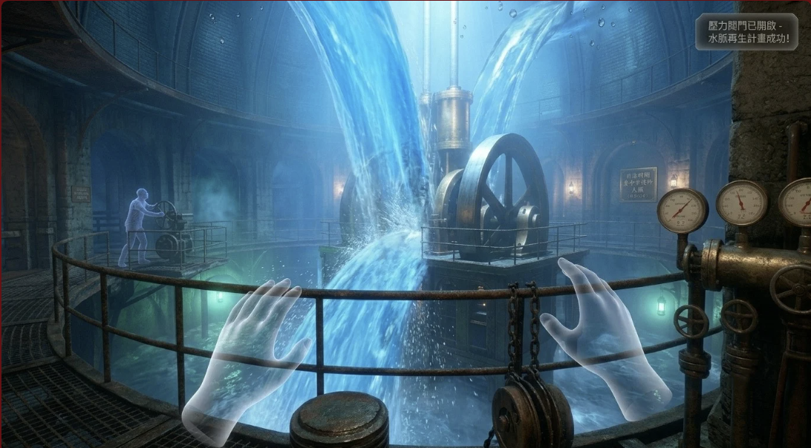
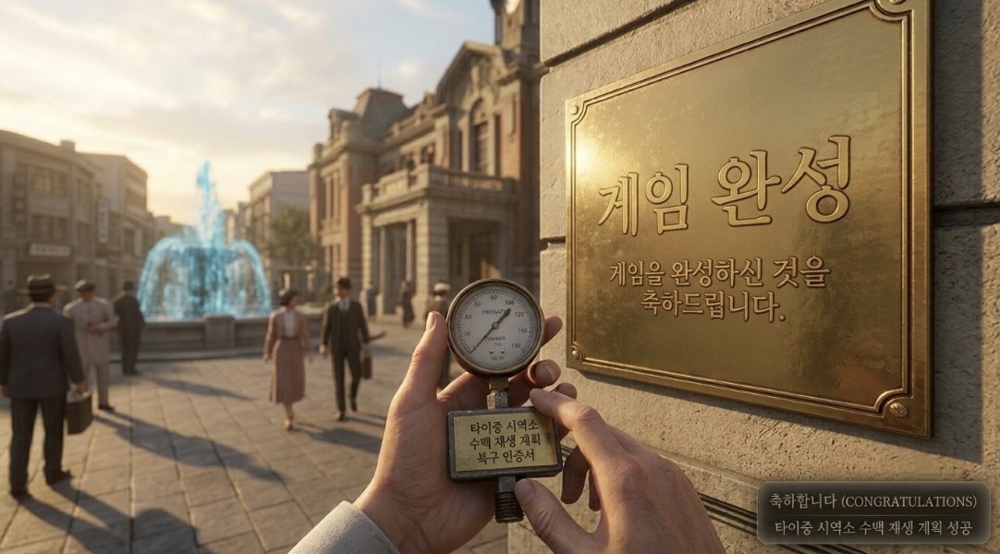

미션의 종착지인 거대 압력 통제실입니다. 거대한 기계 장치를 제어하여 도시에 가두어진 수맥을 다시 사방으로 시원하게 분출시키고 타이중 전역에 물 공급을 복구하는 최종 단계입니다.


클라이맥스와 역사적 가치: 모든 난관을 뚫고 대형 밸브를 열었을 때 마주하는 웅장한 폭포 연출은 본 VR 콘텐츠의 백미입니다. 지하의 폐쇄적이고 어두운 환경에서 밝고 찬란한 현대 타이중 광장의 분수대로 오버랩되는 엔딩 연출은, 과거 보이지 않는 곳에서 헌신했던 기술자들의 노고를 직관적인 시각 경험으로 상기시킵니다.
💡 최종 미션 팁: 밸브를 과도하게 빠른 속도로 돌리면 과부하가 발생해 리셋됩니다. 좌측 경고등의 점멸 주기를 관찰하며 일정 속도를 유지하세요!